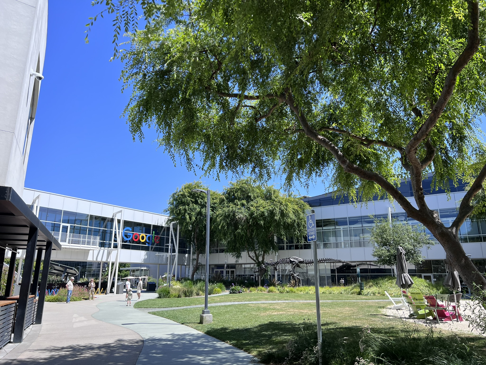
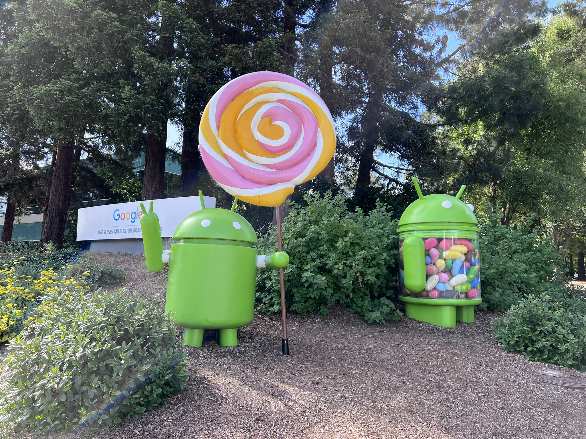
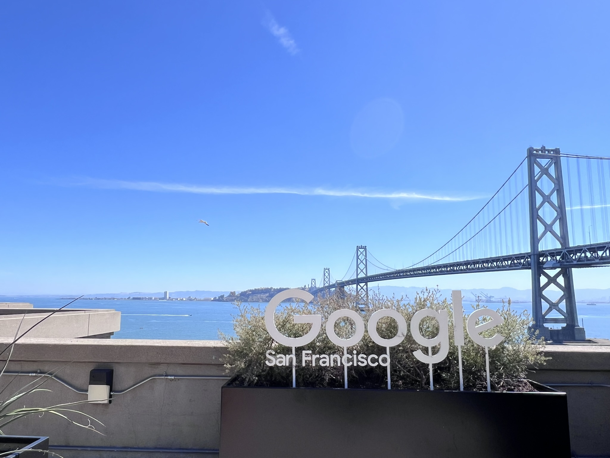
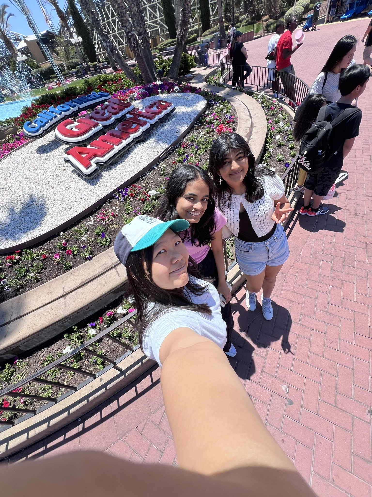
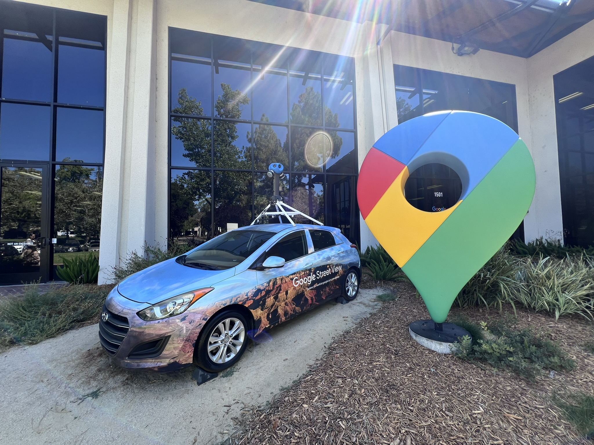
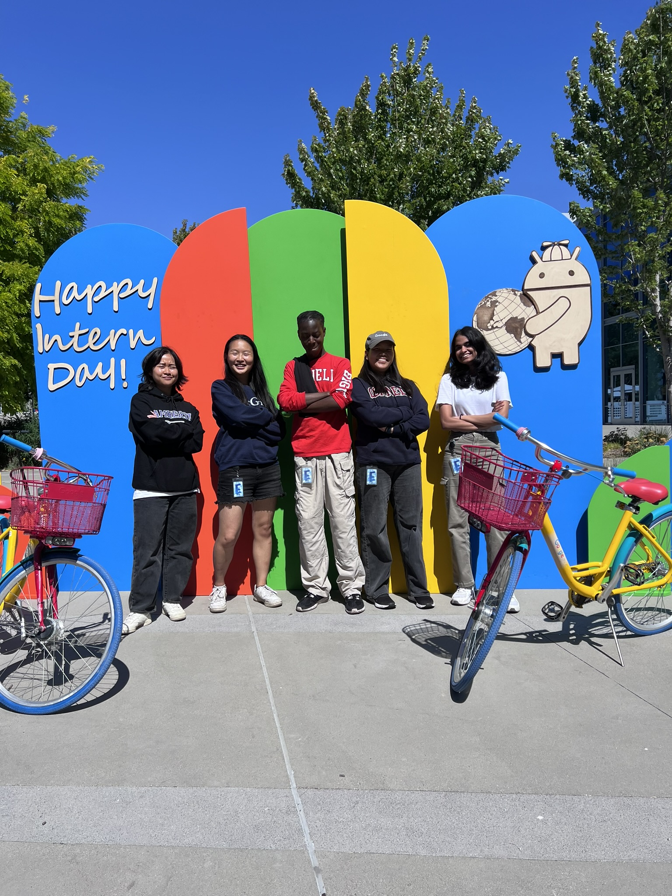
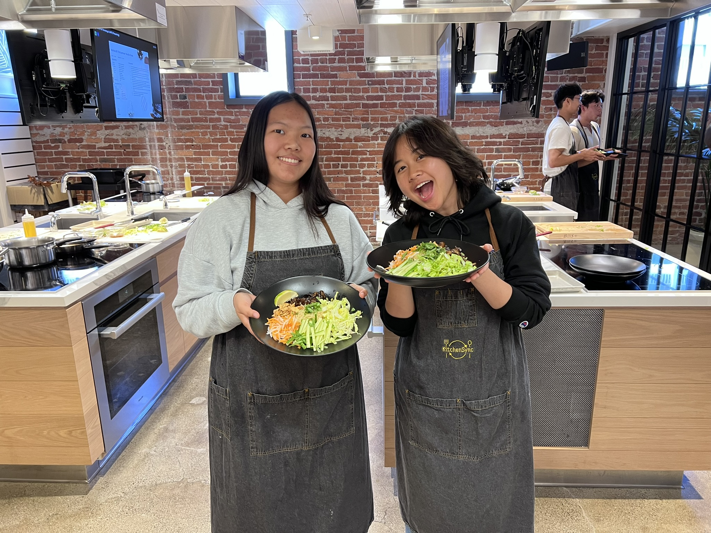

Software Engineer Intern
Overview
This was my first ever internship, and I had an amazing experience learning about Google's engineering culture, structure, and tech stack. I joined the Google Search team, and worked on an internal search tool used to launch experiments for the Google Search team. Through this internship, I was able to apply the technical skills I learned in school to real-world problems, and also familiarize myself with the software development lifecycle in a large tech company.
The project I was tasked with involved implementing a queryable interface for an internal experiment launch tool. I build a Java backend that searched through hundreds of configuration files to extract the specific files containing the specific requirements involved in launching the experiment correlated with the query. The backend then sent the extracted data to the frontend, where I used HTML to build a simple table display for users to easily see what they need to have before launching their experiment.
This project was a great introduction to working in a large codebase and collaborating with other engineers. I also learned how to write and review production-quality code, as well as quickly learn and utilize new langauges and tools that I was previously unfamiliar with.
What I learned
- How to navigate and contribute to a large codebase
- How to write production-quality code and perform code reviews
- How to effectively communicate and collaborate with my mentor and team members
- New programming languages and database querying tools
Technologies Used
- Java
- HTML
- Google's internal configuration language
- Google Search infrastructure and tools
- Google IDE and Git tools
Photos
Some highlights from my internship






